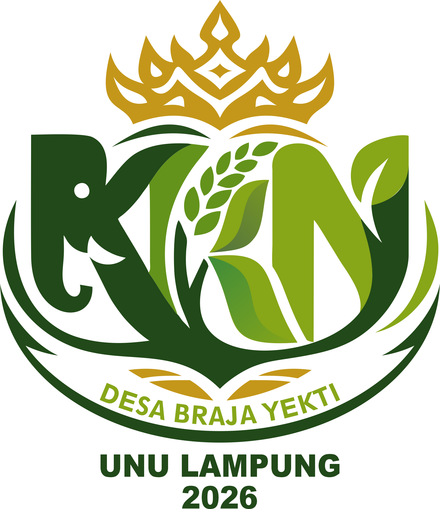

SOSIAL MEDIA
Akun Resmi KKN
UNIVERSITAS
NAHDLATUL ULAMA LAMPUNG
KKN Desa Braja Yekti
Kecamatan Braja Selebah, Provinsi Lampung
@kkn_brajayekti_2026
Akun resmi KKN Desa Braja Yekti 2026
Sosmed Anggota
Deni Aryanto (Ketua)
Koordinator & penanggung jawab KKN
Ahmad Fahru (Divisi PDD)
Publikasi, Dokumentasi & Desain
Muhammad Ikhsan Fajar (Divisi PDD)
Kontak WhatsApp Anggota PDD
Aliman (Divisi Perlengkapan)
Logistik & perlengkapan kegiatan
M. Rizal Zufran (Divisi Perlengkapan)
Logistik & perlengkapan kegiatan
Enjelina (Divisi PDD)
Publikasi & dokumentasi kegiatan
Lu'Lu Hanifatul Halim (Divisi Acara & Humas)
Koordinasi acara & hubungan masyarakat
Kamelia Nisrina (Sekretaris)
Administrasi & surat-menyurat
Dinda Nur Habibah (Divisi Acara & Humas)
Koordinasi acara & publik
Lutfi Nur Azizah (Bendahara)
Pengelolaan keuangan KKN